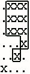

| Source file: | image.{c, cpp, java, pas} |
| Input file: | image.in |
| Output file: | image.out |
Technicians in a pathology lab analyze digitized images of slides. Objects on a slide are selected for analysis by a mouse click on the object. The perimeter of the boundary of an object is one useful measure. Your task is to determine this perimeter for selected objects.
The digitized slides will be represented by a rectangular grid of periods, '.', indicating empty space, and the capital letter 'X', indicating part of an object. Simple examples are
XX Grid 1 .XXX
Grid 2
XX
.XXX
.XXX
...X
..X.
X...
An X in a grid square indicates that the entire grid square, including its boundaries, lies in some object. The X in the center of the grid below is adjacent to the X in any of the 8 positions around it. The grid squares for any two adjacent X's overlap on an edge or corner, so they are connected.
XXX
XXX Central X and adjacent X's
XXX
An object consists of the grid squares of all X's that can be linked to one another through a sequence of adjacent X's. In Grid 1, the whole grid is filled by one object. In Grid 2 there are two objects. One object contains only the lower left grid square. The remaining X's belong to the other object.
The technician will always click on an X, selecting the object containing that X. The coordinates of the click are recorded. Rows and columns are numbered starting from 1 in the upper left hand corner. The technician could select the object in Grid 1 by clicking on row 2 and column 2. The larger object in Grid 2 could be selected by clicking on row 2, column 3. The click could not be on row 4, column 3.
 One useful statistic is the perimeter of the object. Assume each X corresponds to a square one unit on each side. Hence the object in Grid 1 has perimeter 8 (2 on each of four sides). The perimeter for the larger object in Grid 2 is illustrated in the figure at the left. The length is 18.
Objects will not contain any totally enclosed holes, so the leftmost grid patterns shown below could NOT appear. The variations on the right could appear:
Impossible Possible
XXXX XXXX
XXXX XXXX
X..X XXXX
X... X...
XX.X XXXX
XX.X XX.X
XXXX XXXX
XXXX XX.X
..... ..... .....
.....
..X.. ..X..
..X.. ..X..
.X.X. .XXX.
.X... .....
..X.. ..X..
..X.. ..X..
..... .....
..... .....
The input will contain one or more grids. Each grid is preceded by a line containing the number of rows and columns in the grid and the row and column of the mouse click. All numbers are in the range 1-20. The rows of the grid follow, starting on the next line, consisting of '.' and 'X' characters.
The end of the input is indicated by a line containing four zeros. The numbers on any one line are separated by blanks. The grid rows contain no blanks.
For each grid in the input, the output contains a single line with the perimeter of the specified object.
Example input:
2 2 2 2 XX XX 6 4 2 3 .XXX .XXX .XXX ...X ..X. X... 5 6 1 3 .XXXX. X....X ..XX.X .X...X ..XXX. 7 7 2 6 XXXXXXX XX...XX X..X..X X..X... X..X..X X.....X XXXXXXX 7 7 4 4 XXXXXXX XX...XX X..X..X X..X... X..X..X X.....X XXXXXXX 0 0 0 0 |
Example output:
8 18 40 48 8 |